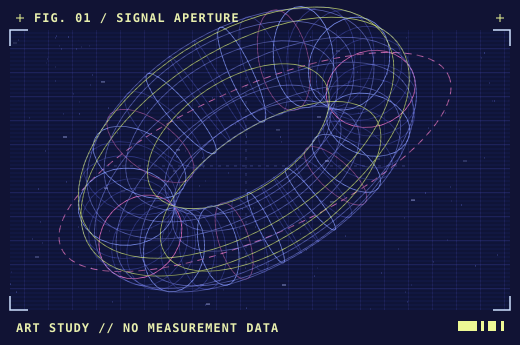

01 / METHOD.LOG
What can two branches share?
If a model reads the same prompt 32 times to give you 32 answers, which work can you skip? The model can process the prefix once. The harder part is making sure each answer still gets its own random draws. Sharing those draws can make branches move together even when each looks fine in isolation.
The study separates the state you can reuse from the sampling events that belong to each path. Then it checks token choices against a reference before counting time or memory.
02 / SCOPE.DAT
Agreement first. Speed second.
All 192 trajectories and 12,288 token decisions matched across three models and two numerical policies. Every pair received the same path-local Philox draws. Reusing one stream across four paths collapsed four distinct trajectories to one in all six negative-control cells.
Open measurement notes and limits
Qwen3-0.6B is a selected workload with paired records. Phi-4-mini is a decode-heavy case reported as aggregate evidence. The timing baseline duplicates the prefix across the batch. These tests do not compare production serving engines or establish a general speedup. Semantic counts are historical aggregates. Peak allocated GPU memory is not whole-device usage or energy consumption.
03 / README.TXT
Start without a GPU.
The CPU demo checks whether each independently sampled branch keeps its token decisions when it shares the prefix. It is a semantic check, not a latency benchmark. The code is Apache 2.0.